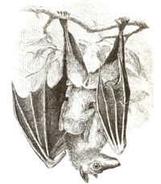

A Season of Saturn and cicadas, honeymoons and haze
Since weddings are a wonderful beginning, let's begin with them. Weddings are of course most traditionally held in June. No doubt the primary reason for this is the month's clement weather (along with, in modern times, the fact that by June or late June graduations from college and high school are over). But can the word "honeymoon" be traced back to an aspect of nature in June?
Apparently, the term "honeymoon" originally referred to the Full Moon of the wedding or the rest of the lunar month (waning moon) after it. But where does the "honey" come from? One suggestion is that the honey is simply a term of endearment (the honeymoon is the moon or month specially for you and your sweetheart). Another suggestion cites the old tradition in some European countries of having the newlyweds take a drink of mead (honey wine) every day for a month after the wedding. Both of these ideas seem rather attractive and reasonably probable. But some scholars think that "honeymoon" is merely a corruption of "hymeneal," the word for the wedding songs. (The poet Percy Bysshe Shelley wrote in "To a Skylark": Chorus Hymeneal/Or triumphal chant/Matched with throe would be all But an empty vaunt/A thing wherein we feel there is some hidden want.)
However, astronomy writer Guy Ottewell points out a possible origin for "honeymoon" which connects it very intimately to an aspect of nature in June. Ottewell notes that the full moon of June (sometimes called the Rose Moon, Flower Moon, or Strawberry Moon) is typically the one which occurs nearest to the summer solstice-the first day of summer. Now, because the Sun passes highest across our sky at summer solstice (at least as seen from lands at mid-northern latitudes, like the U.S. and Europe), we know that the full moon around that time must be the one which passes lowest across our sky. (This is because the full moon always occurs when the moon is directly opposite the Sun in the heavens-thus the full moon is farthest south when the Sun is farthest north). And what appearance does the full moon take on when it appears low in the sky? If there is haze present-as there usually is on June nights-the low moon will be dimmed and turned to a rich golden color: a honey gold.
So perhaps the honeymoon is those nights of June when a honey-colored moon floats low in the southern sky.
It's not just the golden moon that lives in the summer skies. So too does one of Earth's most unusual creatures, an animal which has probably been maligned and misunderstood more than any other: the bat.
Bats are not just the only mammals which can truly fly. About one-fifth of all mammal species in the world are bats. About 100 species of bat are found in North America. And the numbers of individual bats can be enormous: Some particular cave colonies in Texas consist of up to 20 million bats. But their fearsome reputation is nut at all warranted. The vampire bat, that most feared member of the family, bothers livestock, not people. Rabid bats arc dangerous, but other mammals that could bite you are just as likely to be infected.
Another misconception about bats is that they are blind (actually, some ,cc rather well). As you've no doubt heard, bats emit high-pitched sounds (most of them above the range of human hearing) and catch their echoes to form sonar images of the objects around them. They spend virtually the entirety of their waking hours using this sophisticated equipment to pursue flying insects, including many of the biting ones that are pests to humans. A single bat can consume more than 200 insects per day, which explains the rapidly growing number of bat houses in the backyards and gardens of North America. What you might not know is that flocks of bats may rise up to 10,000 feet above the ground, and that some species migrate from as far as Canada to the Gulf states in winter? Anyone who has felt a hat whirl by their head can attest to their speed, and some species have been seen to dive at speeds of up to 80 mph! Finally, some species-including the little brown bat so common from Alaska to Georgia, California to New-found-land-may live to an age of 30 years or more.
What is the connection between the planet with rings of spendor and a loudly singing insects called the cicada? Only that both planet and insect put on a strange special show just a small number of times in each human life-for Saturn once about every 13 or 15 years, and for a particular type of cicada once every 13 or 17 years. Oddly enough, in the summer of 1995, the two cycles coincide: Saturn appears ringless, and it is the time of hatching and amazing singing for the most famous batch of the periodic cicadas sometimes incorrectly called the 17-year "locusts."
Unlike locusts, cicadas are generally quite harmless, sucking sap which trees can afford rather than chewing up leaves and everything else of vegetable nature. In different parts of the U.S. there are different broods of the 17-year cicada, but the most famous, "Brood I," appears and sounds off this summer in the Middle Atlantic states. All members of this genus of cicada-unique to the U.S.-share in common that they endure the 17-year hibernation in the ground before digging up to break free into the air with their redorange wing edgings and buzz-saw-loud but very haunting song.
In the last issue I mentioned that on May 22 the planet Saturn's rings would be displayed sideways to Earth for the first time in 15 years. I noted that the rings are so thin when viewed from this "edgewise" presentation that they would seem to vanish from sight even in the world's biggest telescopes. But I promised that after this edgewise presentation there would be more strange appearances of Saturn in the months ahead. And indeed that is so: During June and July a good amateur telescope will show you Saturn with no trace of rings-except on very steady nights a thin black line or two (the darkened rings and their shadow).
Saturn rises around the middle of the night, at which time the naked eye sees it as the brightest point of light low in the east. But unless you're already an experienced amateur astronomer you should probably wait until later in the summer to look for it. As you'll learn in my next column, the rings in August will burst back into sunlight and offer sights more glorious than any yet.
<
|
 Goudounneix/Explorer/Photo Researchers |
|
|